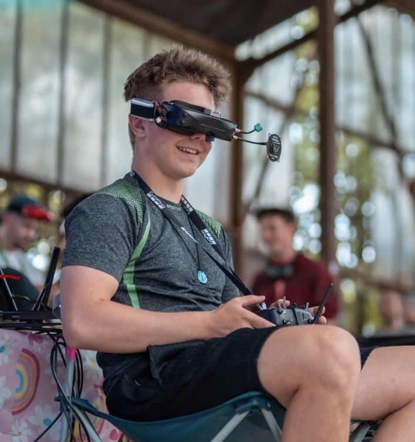
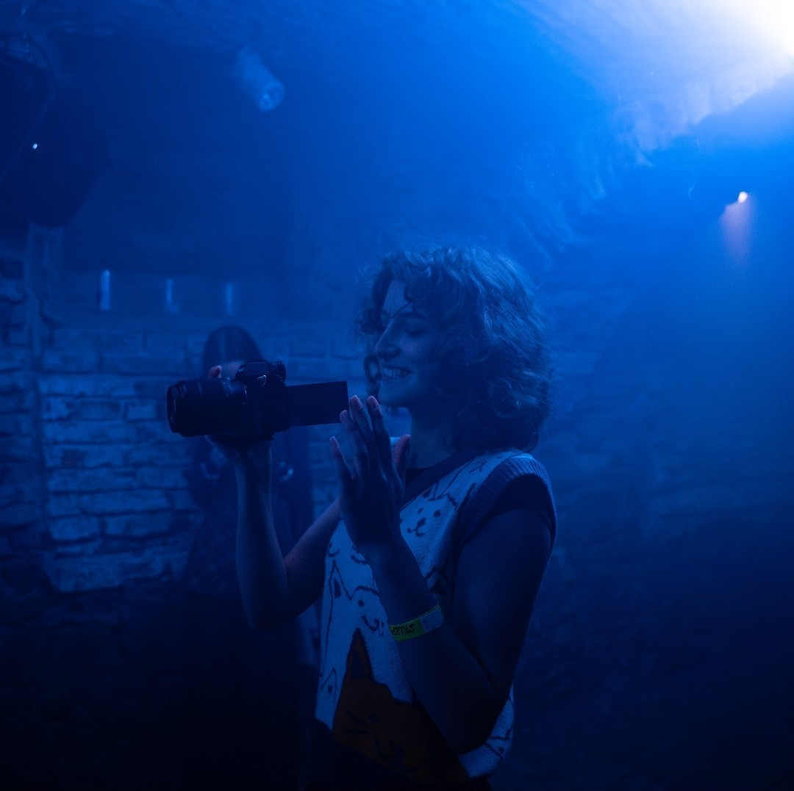
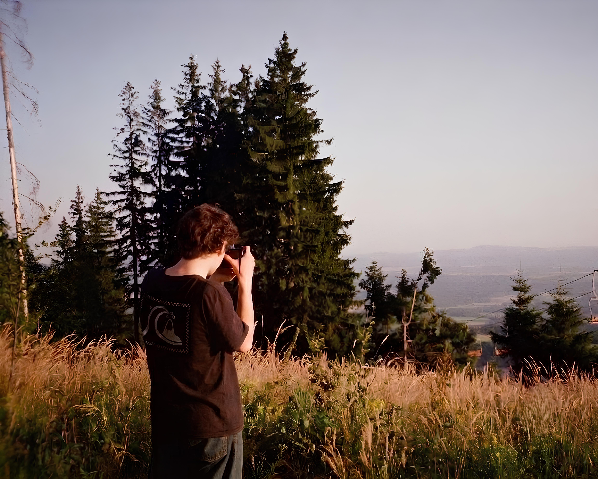
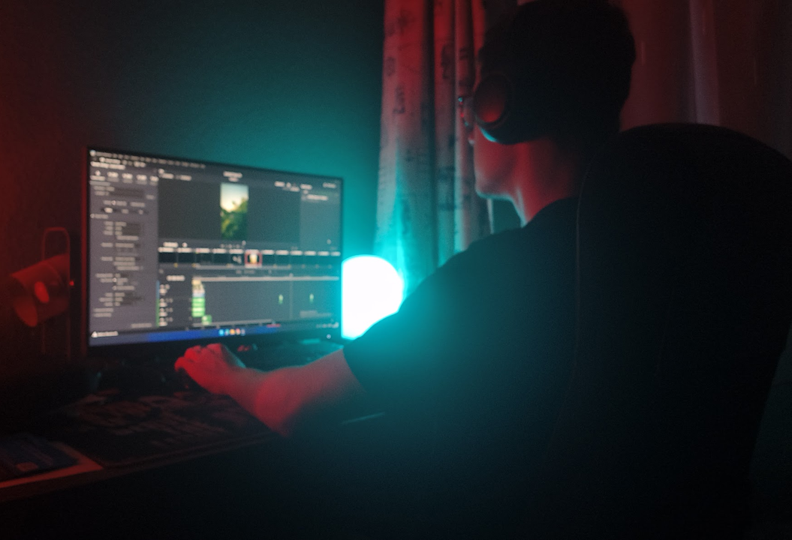
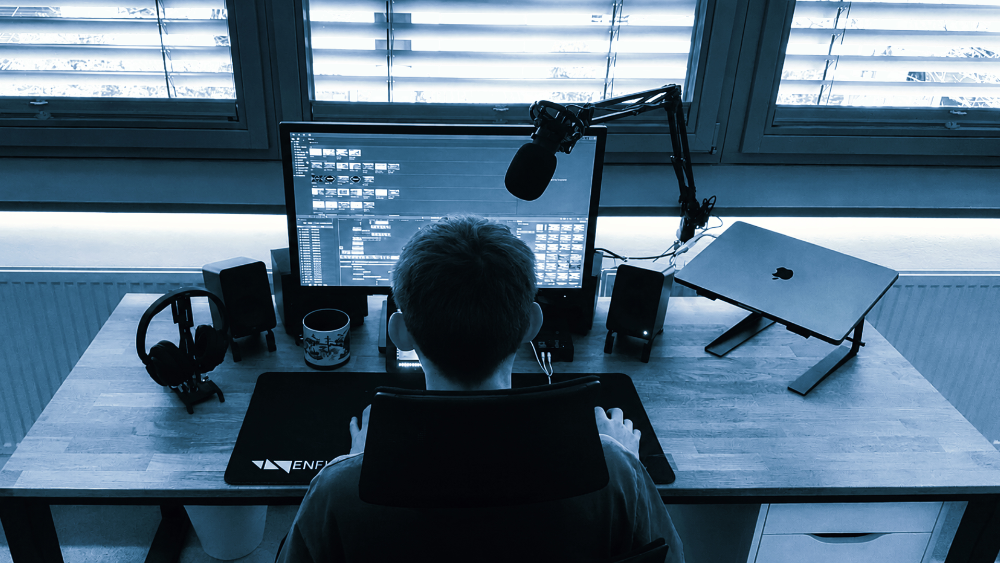

LIDÉ ZA KAMEROU

Honza
Honza spojuje technické znalosti s praktickými zkušenostmi z natáčení. Létá jak s DJI drony, tak s FPV drony, které si sám staví a ladí podle konkrétních požadavků projektu. Díky tomu dokáže vybrat nebo postavit ideální sestavu pro každé natáčení, ať už jde o dynamické akční záběry, nebo plynulé filmové průlety. Kromě létání má na starosti také řízení projektů.

Áďa
Áďa se specializuje na zachycení atmosféry akcí tak, aby si ji lidé mohli znovu prožít i po jejich skončení. Nejvíce zkušeností má s focením, natáčením a následnou postprodukcí materiálů z eventů, koncertů a společenských akcí. Díky citu pro správný okamžik a pečlivé editaci vznikají fotografie i videa, která věrně vystihnou energii každé události.

Filip
Filip je hlavním kameramanem našeho týmu a za kamerou je jako doma. Má zkušenosti z marketingových kampaní i filmových projektů, díky kterým ví, jak zachytit záběry, které zaujmou a zároveň podpoří příběh. Nezůstává ale jen u natáčení. Věnuje se také střihu, takže dokáže celý projekt dotáhnout od prvního záběru až po finální video s důrazem na kvalitu, plynulost a každý detail.

Vojtech

Lukas
lukas
ČASTO KLADENÉ OTÁZKY
Natáčení probíhá přímo během vaší akce nebo podle domluveného scénáře. Jakmile máme natočeno, pustíme se do střihu. Průběžně s vámi konzultujeme směr videa a před finálním dokončením vám dáme prostor pro připomínky. Pokud potřebujete obsah co nejrychleji, zvládneme připravit i krátké klipy přímo během akce, například pro okamžité zveřejnění na sociálních sítích.
Naši piloti mají potřebná oprávnění a certifikace pro provoz dronů. Podle konkrétní lokality, typu natáčení a podmínek letu volíme odpovídající techniku a postup. Pokud vaše natáčení vyžaduje specifické povolení, řešíme ho předem tak, aby vše proběhlo bezpečně a v souladu s platnými pravidly.
Podmínky při natáčení dokážeme přizpůsobit situaci. Naše technika je připravená i na náročnější prostředí a podle konkrétního vybavení zvládáme natáčení například za lehkého deště nebo ve větru. Počasí ale vždy posuzujeme s ohledem na bezpečnost lidí, techniky a samotného letu. Když dron není vhodná volba, máme připravené i jiné způsoby, jak záběr natočit.
Finální video můžeme dodat ve více verzích. Kromě verze s hudbou můžeme dodat také čistou verzi bez hudby, kterou můžete dále využít podle svých potřeb. Hudbu vybíráme tak, aby bylo možné video legálně použít na dohodnutých platformách. Pokud máte vlastní hudbu nebo konkrétní představu, samozřejmě ji můžeme zapracovat.
Prakticky všude, kde to dává smysl a kde to podmínky dovolují. Natáčíme venku i uvnitř, z výšky i těsně nad zemí. A když se do některého místa dron jednoduše nedostane, neznamená to, že záběr nebude. Náš tým zvládá i klasické pozemní natáčení, takže můžeme kombinovat FPV, klasické drony a kamery ze země v jednom videu.
KONTAKTNÍ ÚDAJE
FAKTURAČNÍ ÚDAJE
Tvoje fakturační adresa 456, 150 00 Praha
12345678
CZ12345678
2000123456/2010